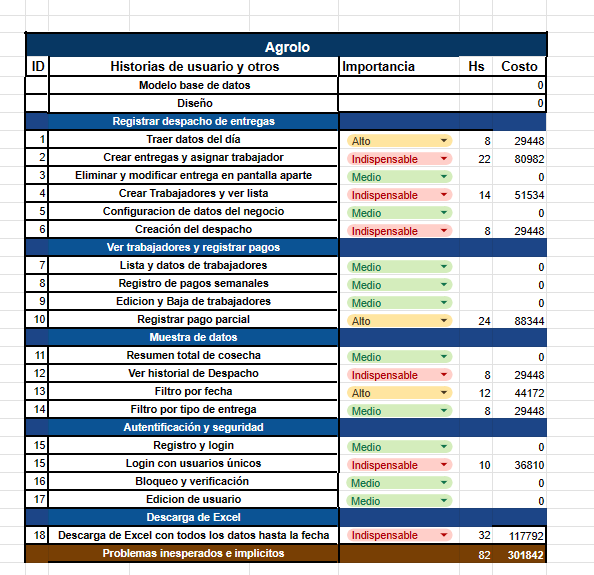
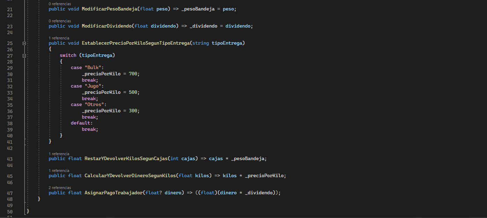

Agrolo
Stack:


Skills: MVC arquitecture | Database and interface design | SOLID
This project aims to streamline the process of recording fruit weight, revenue generated, worker
payments, tray
quantity, client information, and delivery type in a blueberry field. I myself worked in such a field a
few years ago
and witnessed firsthand how slow the process was and how it could be improved.
So, the way it worked was as follows: every 2 hours, a truck would enter the field ready to be filled
with the fruit.
The workers would approach the truck one by one and submit their trays filled with fruit for weighing.
The data would
be recorded on paper, and at the end of the working day, all the calculations would be done to determine
the payments
for each worker, the total amount of fruit collected, and the generated revenue.
Understanding this, the idea of creating an app came to mind. With the app, all the data could be
recorded and
automatically processed, eliminating the need for manual calculations.
I proposed this idea to the field owner, and he liked it. Here is the design:

I also created the entity-relationship, in this, one worker or 'trabajadores' can have multiples
'entregas', and 'entregas' can have only one 'despacho' or truck, etc...

Then I created the users stories describing the problems to be solved and the budget estimating the
amount of hours of work

The next step was creating the connection. For that, I used Entity Framework. Then,
I implemented security by creating the JWT and making the necessary
configurations.
Afterwards, I created the endpoints, connected to the database in the services folder, and whenever
there's
a need
for a business operation, I handle it through the NegocioService class, which contains all the
business
logic.

Finally, I conducted tests using Postman
In this first test a created a new truck which is ready to recive the fruit

In this other test I created a delivery of fruit, asigning the workers ID, the amount of kilos and the
amount of trays

And then, I deliver all the fruit load from the truck,

here's the database

Currently, the project is running smoothly on the server. For the interface, I'm going to train
another
person in the
basics of programming to assist me in the development of the frontend interface. The project is still in
development due to financial reason with the client I am still waiting for the requirements, anyways the
project is going be complete
Automation framework.
Stack: 

Skills: SOLID | Automation
This is my Automation framework, written in C# and using selenium web driver and specflow framework, it
has hooks
(which are process that are executed every time a test case, scenario or step begins or finish), reporting
of the
amount of bugs and the state of the project.
In the features folders we create our Gherkin files and then we use this option and specflow automaticaly
create the methods

In this case first we go to youtube, and then we enter the query "playing god", as soon as the program enters the result page it clicks in the first result it show and then verify the that the title of the video is indeed the specify in the assert function

Following that we
It is avalilable in my github, here is the link:
FlowTest Code
Cannon - A 3D shooter videogame
Stack: 
Skills: SOLID
Cannon is a 3D game where you shoot barrels that appear on the screen using your cannon.
In the game
I created this video game to put my programming skills into practice and to learn Unity engine. a started
with an old version and I manage to make the cannon to shoot the targets with different types of ammo,
sounds and particle effect, but as the project start to grow it became kind of messy, so a started a new
version using some of the code used before, here is how the project look before

And this is the new version, as you can see, I also change the models so it can be more fluent and make
the terrain nicer

this is what I have done so far in 2 days. For now, I going to show the types of bullets the player can shoot,
you can switch between three types of ammunition:
Standar Bullet: a single bullet ideal for precision.

Shotgun Shot: multiple bullets with dispersion, ideal for quickly hitting multiple
nearby
targets.

Freeze Bullet: explosive ammunition ideal for hitting multiple targets with a single
blow.

Next Steps: implement scoring system, HUD, Loot system depending of different barrel,
Improve the performance, Improve the gameplay, Fix bugs
Also, Here is the source code of the project, remember this project only have a couple hours of work so is in a very early phase of development
Sector 7-G
Stack: C# | Unity
Skills: SOLID
Sector 7-G

Sector 7-G is a video game that emerged from a game jam with the theme of "the calm before the storm." It
involves
taking on the role of a technician at a nuclear station and trying to prevent the reactor from exploding,
even though
the ending is inevitable (end screen note: this was my idea). It was developed in 3 days as the final
project for the
game art design course, in which I served as a tutor for composition and music production. However, upon
learning that
I could participate, I joined the group and programmed the button mini-game, as well as composed a small
jazz piece on
the piano. Additionally, I do not appear in the credits screen, but I am mentioned on the page on itch.io.
This is the minigame I coded, basicly when you reproduce the right pattern it give 7 seconds more and a green text apprears, but if you fail then you keep running out of time

As is often the case with such projects and due to the participants' inexperience, the game didn't come
out polished.
The button mini-game lacks proper feedback. Later on, I took the project and polished it myself, but my
version
doesn't include the music from the other team members. Nevertheless, it is more enjoyable, and I also
improved my jazz
piece.
Various projects
Now I am going to show many of the projects that I have work on but I ended up abandond them for one or
other reason
Attica
Stack: C# | dotnet | Angular | Entity Framework
Attica is a web project made in .Net and Angular. I was going to be a platform for users to present projects and
vote for the one they like the most. I finish the database model, the CRUD functions on the API, and some of the functions basic functions on the front, here is a piture of how you whould add members to your organization

Acuarium
Stack: C# | Unity | Spectogram |
Acuarium is a Unity project in which a put a song of mine and then a serius of 3D objects appears
following the frequiensies of the music, meanwhile the player is in the middle of a "Acuarium" watching the music "flows"

PubliEdicto
Stack: Java | String boot | MySql |
PubliEdicto was the final project of the Egg fullStack course it consist on the user uploading an edict
on the web so then it could be quoted and then published, the problem was that we did't have a good
teamwork, the project was completed by me and finish with it's basic function, after that we did't
continous the project

gasistavazquez.online

Stack: HTML | CSS | Bootstrap | JavaScript | Google Ads
This was a landing page for the promotion of a gas engineer services, it reach first place for Mendoza center thanks to SEO work done by me, after some the project didn't work so it was drop
Besares.shop

Stack: Wordpress | Google Ads
This was a website for the promotion of a veterinary, This is the was made with team of Forjadores.online, the SEO was not made by me, I made the landing page, login and register, as well as others configurations for the e-commerce